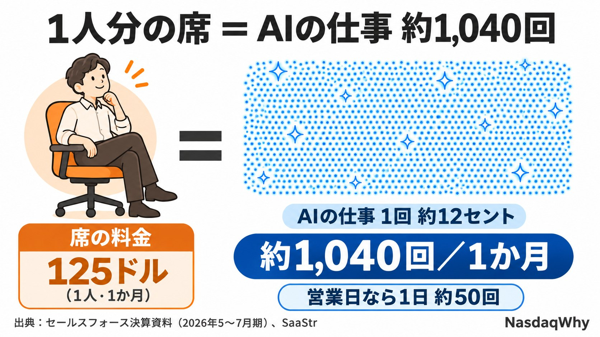
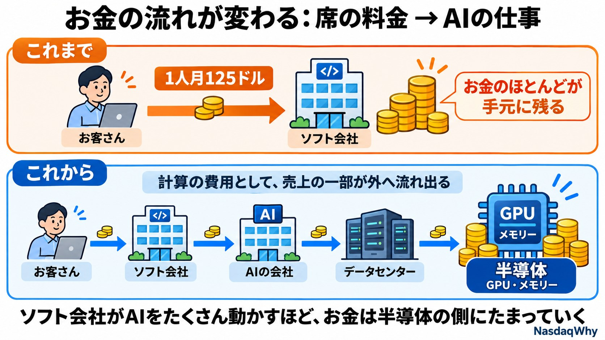

特集｜ソフト株とAI（2026年11月14日）
AIは「1人分の席」を、何回働けば取り戻せる？――ソフト株の本当の勝負は「単価」だ
今日の疑問
AIが人の仕事を代わりにこなすと、業務ソフトの会社はもうかるのでしょうか、それとも損をするのでしょうか。2026年のソフト株は、この問いに大きく揺さぶられてきました。
先に答え
カギは「AIの仕事1回あたりの値段（単価）」です。AIの仕事は量が急に増える一方で、1回の値段は下がっています。勝つのは、値段が下がるより速く量を増やせる会社です。

1人分の席＝AIの仕事 約1,000回
セールスフォースの数字で計算してみます。AIエージェント用の席の料金は1人月125ドル。一方、AIエージェントの年間売上を作業の回数で割ると、1回あたり約12セントになります。
125ドル÷0.12ドル＝約1,040回。
人を1人減らした分の売上を取り戻すには、AIがその1人分の仕事として月に約1,000回、営業日なら毎日約50回働く必要があります。「AIが人を減らすとソフト会社は困る」という話は、この1,000回に届くかどうかの勝負なのです。
1回の値段は下がっている
セールスフォースでは、5〜7月期の作業の回数が32億回で、前の四半期から97%増えました。一方、AIエージェントの年間売上の伸びは、前の四半期から少なくとも25%ほどと推定されます。
回数が約2倍になったのに、売上は1.25倍ほど。単純に割ると、1回あたりの売上は4割近く下がった計算です。ただし、この四半期から売上の数え方が変わったので、きれいな比較ではありません。あくまで目安です。
なぜ値段が下がるのか
- 使う側が上限をかける：スノーフレークは、AIが勝手にたくさん動いて請求額が跳ね上がる「請求書ショック」に備え、利用者ごとの上限や料金の調整のしくみを入れると説明しています。量が増えすぎないよう、使う側にブレーキがかかります。
- AIを動かす費用が高い：AIの仕事1回ごとに計算の費用がかかります。セールスフォース自身、今年アンソロピックに約3億ドルを払う見込みで、簡単な仕事は小さなAIに回す「中間の仕組み」が必要だと語っています。売る側も、1回あたりの費用を下げようと必死です。
- 競争：同じ仕事をこなすAIはどこでも作れます。値下げの圧力は強まる一方です。
下がった分のお金はどこへ行く？
席の料金なら、ソフト会社の手元にほぼそのまま残りました。AIの仕事では、売上の一部がAIの計算費用として、AIの会社やデータセンター、その先のGPUやメモリーに流れていきます。
つまり、ソフト株の不安は半導体の需要と裏表です。ソフト会社が苦しむほどAIをたくさん動かせば、そのお金は半導体の側にたまっていきます。

4社をこの物差しで見ると
- セールスフォース：量は急増、ただし単価は下落中。買収分を除いた売上の伸びは6.4%で、まだ量の伸びが単価の下落に勝ち切れていません。
- サービスナウ：AIの契約は伸びています。それでも10〜12月期の残存契約の伸びの予想18.5%が嫌われ、10月29日に1日で-26.9%。量の伸びが全体を引っ張る力には、まだ見えていません。
- スノーフレーク：使った分だけ課金なので、量の増加がそのまま売上になります。8〜10月期の製品売上は37〜38%増が会社の予想です。弱点は、上で見た利用の上限と計算の費用です。
- パランティア：7〜9月期は米国の企業向け売上が148%増と、量の勝負では先頭にいます。ただし時価総額は今年の売上見通しの約50倍で、値段にはすでに大きな期待が入っています。
金利5%がのしかかる
11/9〜11/13の週、米10年債の利回りは5%を超えました。売上の50倍のように将来の成長を先に買っている株ほど、金利の上昇で値段が下がりやすくなります。単価の勝負とは別の、外からの重しです。
NasdaqWhyの見立て
AIは業務ソフトを消すのではなく、業務ソフトの「値段の付け方」を変えています。そして、1回あたりの値段は下がり続ける可能性が高いと見ます。
だから見るべきは「AIの売上が何%伸びたか」ではなく、作業の回数と売上の伸びの差です。差が縮めば単価の下落が止まり、ソフト会社は量で稼げるようになります。差が広がり続ければ、AIのお金は半導体の側に流れ続けます。
考えられるシナリオ
- 量が単価に勝つ：作業の回数と売上の伸びの差が縮む。ソフト株は「AIで稼げる」と見直される。
- 単価の下落が続く：回数ばかり増えて売上が追いつかない。ソフト株はさえず、得をするのはAIの計算を支える半導体やデータセンター。
- 金利が主役：中身に関係なく、利回り5%超えが続いて値段の高い株から売られる。
次に確かめること（ここで答え合わせ）
- 12/2（水）スノーフレークの決算：AIの利用が増える中で粗利益率が下がれば、「計算の費用が利益を食う」シナリオが強まる。
- 12月上旬 セールスフォースの決算：作業の回数の伸びが売上の伸びの2倍以上のままなら、単価の下落が続いている証拠。
- 12/9（水）FOMC：利上げの幅が0.5%なら、値段の高いソフト株に逆風。
- 来年2月 パランティアの決算：米国の企業向けの新しい契約が再び伸びるか。
出典
- SaaStr：セールスフォースの5〜7月期の分析
- AlphaSense：セールスフォース決算の要点
- INDmoney：セールスフォース決算の分析
- Business Insider Japan：ベニオフCEOとアンソロピックへの支出
- MarketBeat：スノーフレーク決算（利用の上限について）
- TIKR：スノーフレークの12/2決算の注目点
- Trefis：サービスナウの急落
- Coinpaper：パランティアの7〜9月期決算
- FourWeekMBA：パランティアの株価と売上の倍率
note：https://note.com/nasdaqwhy